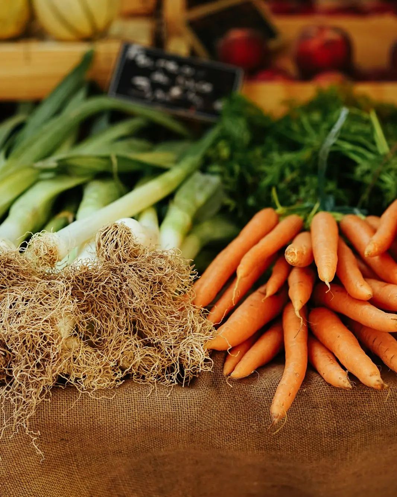
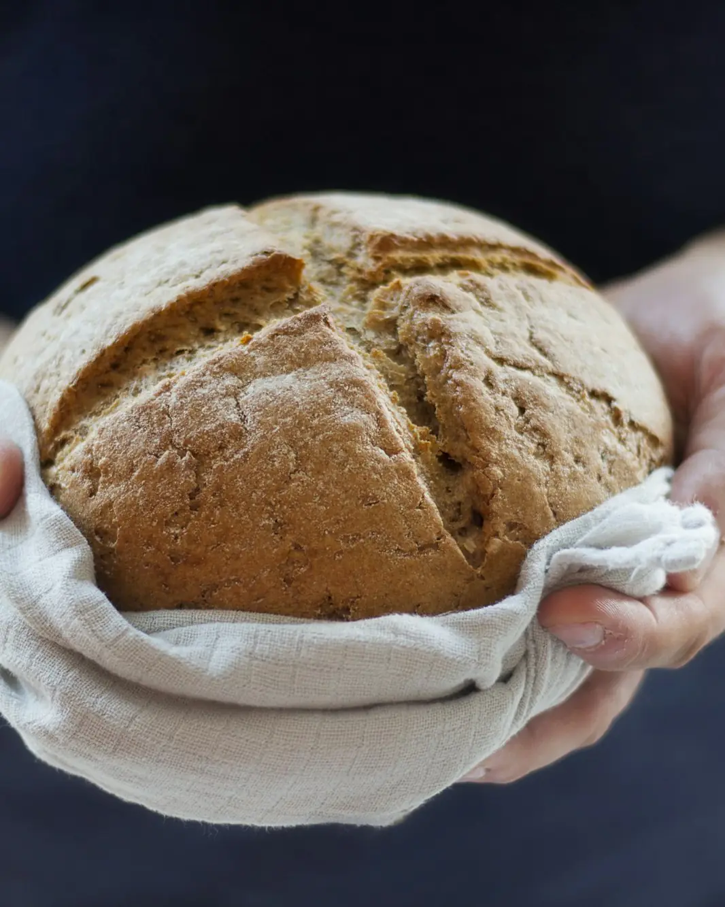
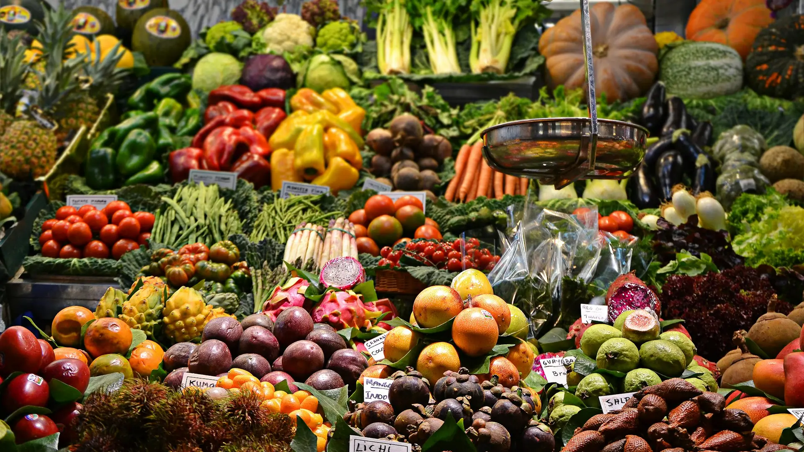

Le prix juste, affiché
Sur chaque étiquette, vous voyez ce que touche le producteur. Exemple avec notre tomme des Monts du Lyonnais.
Tomme des Monts, 200 g5,20 €
- Producteur · 3,02 € (58 %)
- Transport · 0,31 € (6 %)
- Épicerie · 1,87 € (36 %)
Odette est une épicerie de quartier à la Croix-Rousse. Des produits de 32 fermes à moins de 80 km, des paniers prêts à cuisiner, et votre commande qui vous attend au comptoir ou dans un casier, même à 21 h.


Parce qu'acheter local ne devrait pas demander trois marchés et deux heures le samedi matin.
On va chercher les produits à la ferme, on fixe les prix avec les producteurs, et on compose des paniers qui tombent juste.
Des produits de saison, un prix lisible, moins de gaspillage, et dix minutes de courses par semaine.
Que chaque quartier ait son épicerie, et chaque producteur sa vingtaine de familles fidèles.
Sur chaque étiquette, vous voyez ce que touche le producteur. Exemple avec notre tomme des Monts du Lyonnais.
Tomme des Monts, 200 g5,20 €
32 fermes, la plus lointaine à 78 km. Pas d'avocat, pas de fraise en hiver.
Les paniers sont calibrés au plus juste, et ce qui reste part le samedi en panier anti-gaspi.
Apportez vos contenants. Nos bocaux sont consignés 0,50 € et lavés sur place.

Et 27 autres. Chaque fiche produit indique la ferme, le village et le jour de récolte.
Où voulez-vous récupérer votre commande ?
Créneau